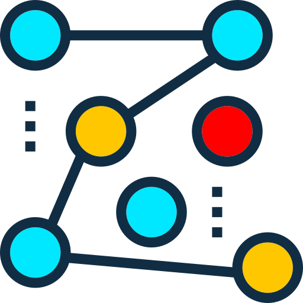

 <div class="grid grid-cols-3 mt-4 space-x-4 md:space-x-6 md:flex md:justify-center lg:justify-start">
  <a  #counter1 aria-label="add to slack" href="#" class="p-4 border border-gray-200 dark:bg-gray-800 dark:border-gray-700 rounded-full duration-300 hover:border-cyan-400 hover:shadow-lg hover:shadow-cyan-600/20 dark:hover:border-cyan-300/30">
      <div class="flex justify-center space-x-4">
          
          <span class="hidden font-medium md:block dark:text-white mt-2">{{ count1 }} Farmers</span>
      </div>
  </a>    
  <a  #counter2 aria-label="add to chat" href="#" class="p-4 border border-gray-200 dark:bg-gray-800  dark:border-gray-700 rounded-full duration-300 hover:border-green-400 hover:shadow-lg hover:shadow-lime-600/20 dark:hover:border-green-300/30">
      <div class="flex justify-center space-x-4">
        
        <span class="hidden font-medium md:block dark:text-white mt-2">{{ count2 }} Systems</span>
      </div>
  </a>   
  <a  #counter3 aria-label="add to zoom" href="#" class="p-4 border border-gray-200 dark:bg-gray-800  dark:border-gray-700 rounded-full duration-300 hover:border-blue-400 hover:shadow-lg hover:shadow-blue-600/20 dark:hover:border-blue-300/30">
      <div class="flex justify-center space-x-4">
        
        <span class="hidden font-medium md:block dark:text-white mt-2">{{ count3 }} Visitors</span>
      </div>
  </a>    
</div>
 
  